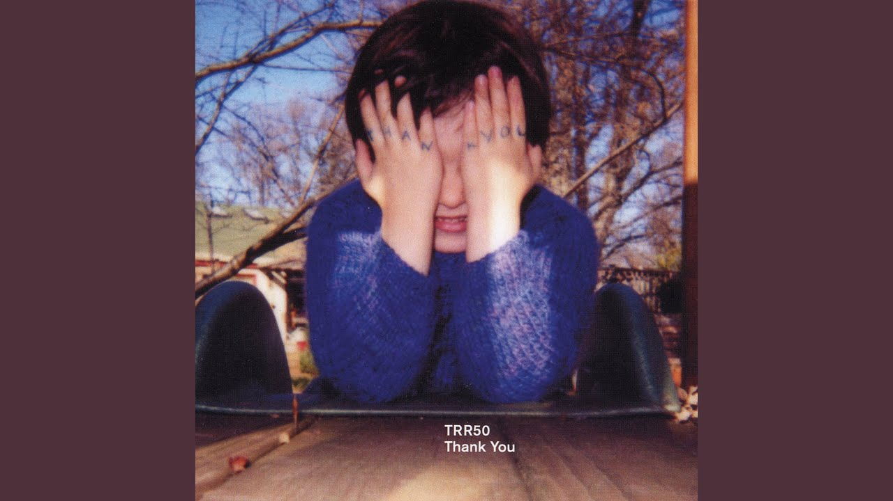
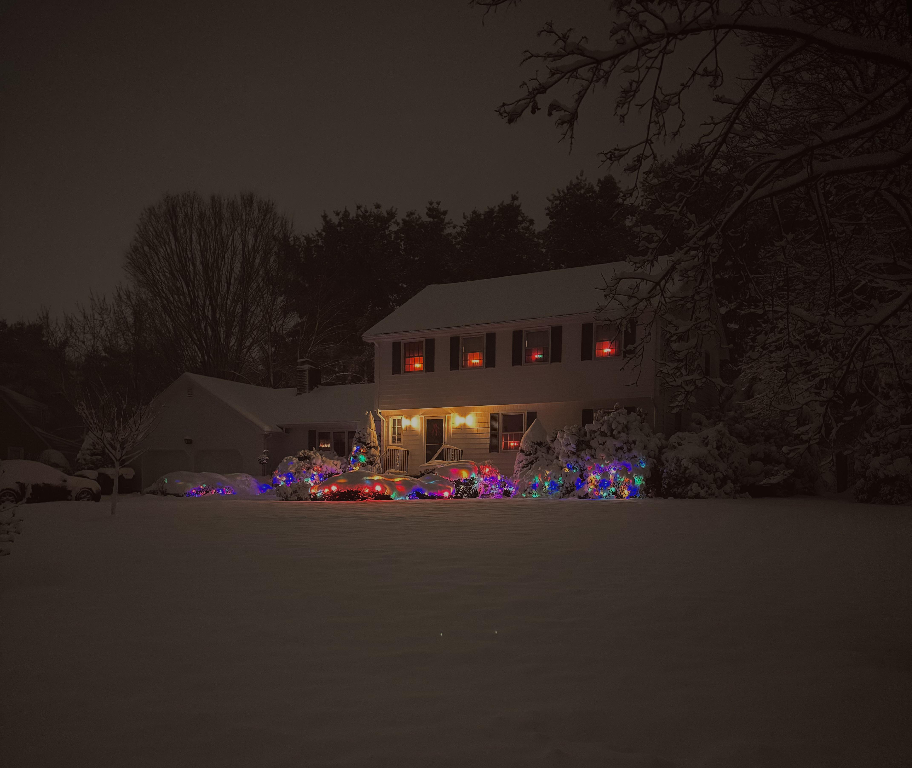

Welcome
Welcome to Ranlogs
Always scroll down for new logs
Randomness
I really believe in randomness that's what this whole site is all about.
But one might ask, why?
Well, I have two answers for that:
- I really want to make blogging or brainstorming fun, and this removes all possible friction.
- I really like doing it this way.
What’s this website running on?
Just a single HTML file, a single .md file, and a ~300-line Python script that converts my Markdown into HTML
Font is Departure Mono: https://departuremono.com/
Grass is always greener on the other side
Always.
Felicity
A fleeting felicity, shadowed by sorrows yet to come; for what are joy and grief but passing visitors,
when the heart is set upon a purpose beyond them both?
9/10/26
Bryan Johnson --> Read More
Stuck in a loop of nothing.
but making it look like he is doing something very great for humans he is not.
11/10/26
Too much Jargon
Fast-paced life is literally a wasted life; the faster you move, the stupider you become.
20/10/26
AI
The bread is full of microplastics, and the circus is A.I. generated.
You still enjoying that microplastic bread?
1/11/26
Machine
Slow, Fast, Big, Small, Industrial, Commercial.
It's exhausting, continuous, repetition, Short term pleasure.
yes
Yes
You invented something.
Now you are free.
3/11/26
No Time
So many things pending ( imp ones )
5/11/26
The Four Trees
Best Post-Rock Playlist ever
Yeah you can argue with - "Lift Your Skinny Fists like Antennas to Heaven".
6/11/26
Based [Things I use]
- Old Laptop running arch [xfce]
- Xfce Terminal
- Brave
- Screen shot tool
- Mousepad
- vim, nvim
- Mostly everything is on paper not a big fan of digitalism
for to do list a short notebook
for journaling [legal paper]
Any pen
Wisdom
Really far away from me
Really close to me
but I can't touch it right now.
Beyond Compare Solo

10/11/26
Christmas

Internet
I just realised how humans are really indenpendt on internet
It is really really mind bending.
[yea my wifi was not working for like 3hrs (and I listed out 100 Imp things to-do.]
12/11/26
Hyperthymesia
It's 50-50 in me
13/11/26